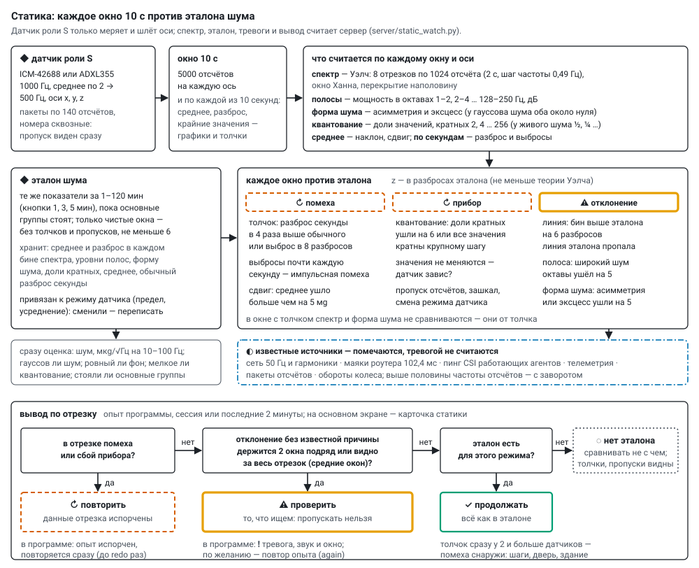

Статика: эталон шума и слежение
Статический датчик — агент с ролью S в общей прошивке: только меряет и шлёт оси, ничего не генерирует, в группах не участвует, по ESP-NOW не говорит, CSI не пингует. Спектр, эталон, тревоги и вывод «продолжать / повторить / проверить» считает сервер (server/static_watch.py, нужен numpy — без него сервер работает, но статику не считает). Статических датчиков может быть сколько угодно; телефон шлёт такие же пакеты и для сервера тоже статический датчик. Датчики — sensors.md, подключение — wiring.md.


Что приходит с датчика#
- 500 отсчётов в секунду по трём осям: ICM-42688 — 1000 Гц, режим малого шума, только ускорение, среднее по
avgотсчётам (1, 2, 4, 8; по умолчанию 2), фильтр датчика ниже половины выходной частоты, чтобы спектр не заворачивался; ADXL355 — сразу 1000/avg Гц со своим фильтром. Предел ±2 g (можно 4, 8, 16): у ICM-42688 единица 61 мкg при шуме около 1,1 мg — квантование далеко ниже шума. - Без потерь: FIFO датчика держит 256 отсчётов, агент забирает их каждые 10 мс; переполнение считается и видно. Пакеты
accпо 140 отсчётов (x y z, int16, base64) с номером первого отсчёта и меткой времени; номера сквозные — пропуск сервер видит сразу. - Молчание (
tl= 2): отсчёты копятся в кольце (около 25 с при 500 Гц) и потом уходят; дольше — старое затирается, сервер видит пропуск. В опытах с молчанием статика не молчит — молчат генераторы. - Регистры датчика (режим, FIFO, фильтр) читаются обратно и идут в телеметрию.
- Роль S — в окне агента на основном экране («→ в измерители (статика)»); агент запоминает её (NVS), перезапускается и сразу меряет, даже без сервера. Обратно — «→ в генераторы». Агент стартовал статическим, а на сервере роль не задана — сервер принимает роль S.
Отсчёты хранятся как есть: data/accel/<дата>/<mac>.bin (int16 x y z подряд) и <mac>.idx.jsonl (строка на пакет: номер первого отсчёта, сколько, частота, метка времени); в общий журнал не пишутся.
Оси: по тяжести — положение датчика неважно#
Сервер считает не по осям датчика, а по тяжести: вертикаль — вдоль среднего ускорения, горизонталь — две оси поперёк неё вместе (мощность — средняя по двум, форма шума — по обеим). Поэтому датчик можно класть как угодно: эталон годится при любом положении, вибрация пола остаётся на вертикали, где бы ни была ось z. Положение задаётся по первому окну. Тяжесть повернулась больше чем на 2° (PLACE_DEG) — датчик положили иначе: одно окно «⤾ новое положение» (помеха, опыт повторится), дальше — новые оси и тот же эталон. Как лежит датчик (какая его ось смотрит вверх и наклон) — на карточке в «◆ статика подробно». Квантование, зашкал и зависание — по осям самого датчика x, y, z: это свойства прибора. «Вживую» — в, г1, г2 и |a|.
Окно: что считается#
Окно — 10 с (WIN_S). По каждому окну, по вертикали и горизонтали:
| показатель | как |
|---|---|
| спектр | Уэлч: отрезки 1024 отсчёта (2 с, шаг частоты 0,49 Гц), окно Ханна, перекрытие наполовину — 8 отрезков на окно |
| полосы | мощность в октавах 1–2, 2–4 … 128–250 Гц (до половины частоты отсчётов), дБ |
| форма шума | асимметрия и эксцесс после вычитания среднего каждой секунды; у гауссова шума оба около нуля |
| квантование | по осям датчика: доли значений, кратных 2, 4 … 256: у живого шума ½, ¼ …; «гребёнка» — все значения кратны одному шагу |
| среднее | по вертикали и двум горизонтальным осям (горизонталь — это наклон); зашкал; пропуски |
| по каждой секунде | среднее, разброс, крайние значения — графики и толчки |
Эталон#
Эталон — те же показатели за 1–120 минут, пока основные группы стоят. Запись — «◆ эталон 1 / 3 / 5 мин» на карточке статики основного экрана, в окне «◆ статика подробно» или в начале программы (baseline_min). Берутся только чистые окна, без толчков и пропусков, не меньше 6 (минута). Запись идёт на одно окно (10 с) дольше заказанной: окна идут по сетке, первое после старта неполное — так и «1 мин» набирает 6 целых окон. Хранится: среднее и разброс по окнам в каждом бине спектра (и разброс, сглаженный по соседним бинам), линии эталона (бины на 6 дБ выше соседей), уровни и разброс полос, форма шума, доли кратных, среднее, обычный разброс секунды.
Сервер сразу оценивает эталон: шум в мкg/√Гц на 10–100 Гц (по паспорту ICM-42688 — 70, ADXL355 — 25); гауссов ли шум (|эксцесс| < 0,2, |асимметрия| < 0,1); ровный ли фон (полосы от 4 Гц у двух половин записи расходятся не больше чем на 1 дБ или 4 своих разброса — что больше); мелкое ли квантование; стояли ли основные группы — если кто-то считал, эталон «не чистый».
Эталон привязан к режиму датчика (предел, усреднение): сменили режим — эталон надо переписать, карточка об этом скажет. От положения датчика эталон не зависит. Эталоны, записанные по осям датчика (до осей по тяжести), не подходят — карточка просит переписать один раз. Хранится в data/static/baselines/<mac>.json (и копия с датой).
Слежение: каждое окно против эталона#
| вид | когда | класс |
|---|---|---|
| ⚠ линия | бин спектра выше эталона больше чем на 6 разбросов (Z_LINE); ниже 1 Гц не ищем | отклонение |
| ◐ линия пропала | линия эталона ниже себя на 6 разбросов | отклонение |
| ⚠ полоса | широкий шум октавы ушёл на 5 разбросов (Z_BAND); частоты известных и найденных линий (±2 бина) не считаются — одна линия не тревожит дважды | отклонение |
| ⚠ форма шума | эксцесс или асимметрия ушли на 5 (Z_GAUSS) | отклонение |
| ⚠ квантование | доли кратных ушли на 6 (Z_QUANT), все значения кратны крупному шагу или не меняются | прибор |
| ⚠ пропуск, зашкал, смена режима датчика | — | прибор |
| ↻ толчок | разброс секунды в 4 раза выше обычного (KNOCK_X) или выброс в 8 обычных разбросов (KNOCK_PEAK) | помеха |
| ↻ выбросы | толчки почти каждую секунду — импульсная помеха (наводка, искра, мотор) | помеха |
| ↻ сдвиг | среднее ушло от медианы трёх прошлых окон больше чем на 5 мg (MOVED_UG; тепло даёт меньше); дальше — от нового среднего | помеха |
| ↻ новое положение | тяжесть повернулась больше чем на 2° — датчик положили иначе; одно окно | помеха |
Разброс каждой частоты берётся из эталона, сглаживается по соседним частотам и не бывает меньше 0,9 теоретического для Уэлча (4,34/√8 дБ): по немногим окнам у отдельной частоты он бывает мал случайно. В окне с толчком спектр и форма шума не сравниваются — они от толчка.
Известные источники. Линия рядом с известной частотой помечается и тревогой не считается: сеть 50 Гц и гармоники, маяки роутера (102,4 мс), пинг CSI работающих агентов, телеметрия, пакеты отсчётов, обороты колеса, переменное поле катушек (частота поля и гармоники — провода дрожат и вдвое чаще). Частоты выше половины частоты отсчётов учитываются с заворотом.
За весь отрезок. Кроме окон, весь отрезок (опыт, сессия) сравнивается с эталоном по средним окон: слабая линия, невидимая в одном окне, за n окон видна в √n раз лучше. На синтетике линия 120 мкg (+1,3 дБ над шумом) в отдельных окнах почти не видна, за 3 минуты — z 8,6.
Вывод: продолжать, повторить, проверить#
По отрезку — опыту программы, сессии или последним 2 минутам:
- ↻ повторить — в отрезке помеха или сбой прибора: данные испорчены. В программе опыт помечается испорченным, не идёт в сравнение и сразу повторяется (до
redoраз). - ⚠ проверить — отклонение без известной причины держится 2 окна подряд (
PERSIST) или видно за весь отрезок. В программе — ❗ тревога и по желанию повтор опыта (program.md). - ✓ продолжать — всё как в эталоне.
- ◌ нет эталона — сравнивать не с чем; толчки, пропуски и квантование видны и без эталона.
Толчок сразу у двух и больше датчиков (в пределах 1,5 с) — помеха снаружи: шаги, дверь, здание; это пишется в примечание вывода. Самое большое отклонение без известной причины за отрезок — zmax.
Состояние датчика вживую: ✓ как эталон · ◐ разовое отклонение — смотрим следующее окно · ◐ как эталон, кроме известных источников · ⚠ отклонение (держится) · ↻ помеха · ↻ прибор · ◌ нет эталона или эталон для другого режима · ✗ датчик молчит. Отклонения пишутся в data/static/events.jsonl.
Где смотреть#
- Карточка статики на основном экране: вердикт крупно и за какой отрезок, каждый датчик с причинами; живые Гаусс, спектр и колебания выбранного датчика и оси за 10 с (раз в 3 с,
/api/static/live) — гистограмма отклонений против гаусса того же разброса, форма словами (гаусс / хвосты — толчки, выбросы / ступенчатый), СКО, асимметрия, эксцесс; запись эталона. Нажатие на графики — окно «∿ вживую»: все оси и модуль, окна 10 с, 1, 5, 15 мин, «⟲ сброс», колебания по секундам. - «◆ статика подробно» (
/acc): эталон и его качество; по каждому датчику спектр последней минуты на фоне коридора эталона (±3 разброса), найденные линии, разброс, среднее, форма, квантование, полоса дальше всех от эталона, регистры датчика; графики по времени; журнал отклонений. - Наблюдение (
/watch) — статика крупно, читается издалека.
Проверка без плат#
python tools/test_static_watch.py— синтетика: эталон, чистый шум (ни одной тревоги), линия 37 Гц, слабая линия 23 Гц, сеть 50 Гц (известная), толчок, значения кратны 256, выбросы, пропуск, датчик без эталона.python tools/sim_agents.py 900 --port 5015с отдельным серверомpython server/monitor.py --http 8091 --udp 5015 --data data/test/sim --no-beacon— три статических по расписанию: первые 3 минуты чистые (записать эталон), с 180-й секунды каждые 75 с толчок у всех, 300–420 с линия 37 Гц у первого, 480–540 с у третьего значения кратны 256; у второго всегда сеть 50 Гц.